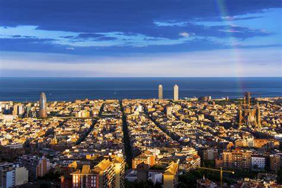

LOCAL TURISTICO
Projeto feito para a rocketseat!
Barcelona
Barcelona é uma cidade vibrante e cheia de cultura, localizada na região da Catalunha, no nordeste da Espanha. Famosa por sua arquitetura impressionante, Barcelona abriga obras-primas de Antoni Gaudí, como a Sagrada Família, o Parque Güell e a Casa Batlló. A cidade combina um rico patrimônio histórico com uma atmosfera moderna e cosmopolita, oferecendo desde bairros antigos como o Bairro Gótico até áreas contemporâneas como o distrito de Eixample. Além disso, Barcelona é conhecida por suas praias ao longo do Mediterrâneo, uma vida noturna animada, e uma culinária deliciosa, com tapas e pratos como a paella sendo muito populares. A cidade também tem uma grande importância no esporte, especialmente com o FC Barcelona, um dos clubes de futebol mais famosos do mundo.